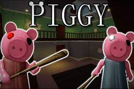
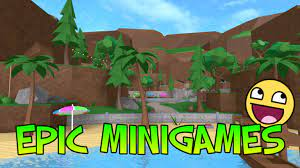
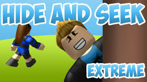
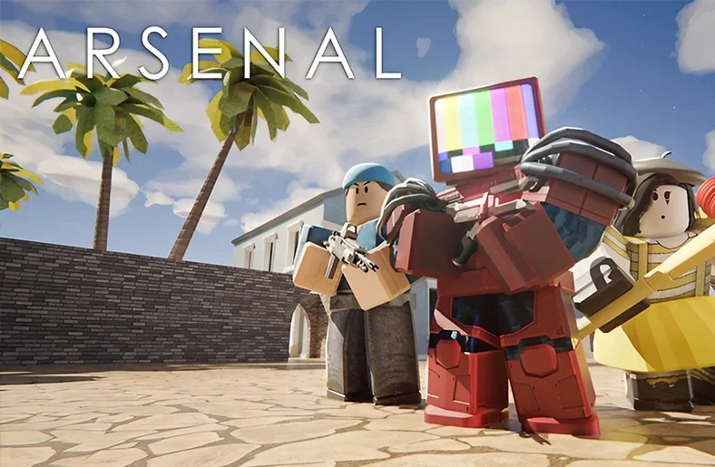

About Me
I am CYX, also known as towelmaster12. I love to play games and develop them. This not only makes me happy but also it is also an enjoyment to me.
I live in malaysia, South East Asia.
My Favourite Game
PIGGY

It combines the game-play and aesthetics of Granny and the style of Peppa Pig (although the game has
since strayed away from the TV show, as the game got popular and notable by many people). With different
gamemodes, players can either be a survivor or Piggy, or if selected, one can be the Traitor.
The main goal in each map for survivors is to complete different tasks and escape or reach the goal while avoiding
the Piggy before the timer runs out. Meanwhile, the Piggy has to kill all the survivors or at least prevent
them from winning.
More Games
EPIC MINIGAMES
Epic Minigames is a round-based minigame game created by TypicalType and developed with the help
from TheSteelEagle and Azarctic. In Epic Minigames, players can play a variety of different
minigames every round. If players win a minigame, they earn 10 points (15 points in Pro Servers),
which players can spend items in the shop. After each round, players will respawn in the lobby,
where a new minigame is chosen after 10 seconds. Most minigames are usually around 30 to 90 seconds.
HIDE AND SEEK EXTREME
Hide and Seek Extreme is a hide-and-seek genre game created by Tim7775 on January 18, 2015.
It is a rework of older hide-and-seek games, possibly TwoShue's Hide n' Seek XL: Living Spaces.
In this game, up to 13 players need to stay away (hide) from the seeker for a period of four
minutes otherwise they will get caught and lose.
ARSENAL
Race to the top through a massive Arsenal of weapons!
Conquer the day in fast paced arcade gameplay, from bazookas to spell books, each weapon will keep you guessing on what's next!
Earn BattleBucks and trick out your game with a huge cast of characters, melees, kill effects, skins and more!
Join the ROLVe group for an in-game chat tag and 25% more BattleBucks and XP!